01
行程计划
时刻为参考，具体集合时间以群内通知为准去程 · 9/11 周五
吉祥航空
HO1131
18:30 → 20:45
虹桥 T2 → 武宿 T2
请提前 90 分钟到机场办理值机
返程 · 9/16 周三
东方航空
MU2410
19:00 → 21:15
武宿 T2 → 虹桥 T2
东航提供机上餐食·无需自费
| 日期 | 主题 | 亮点 | 住宿 |
|---|---|---|---|
| 9/11 周五 | 飞抵太原 | 晚班机 18:30 出发 | 太原 · 希尔顿欢朋(4钻) |
| 9/12 周六 | 五台山朝圣 | 四寺 + 黛螺顶 1080 台阶 | 五台山 · 全季酒店(4钻) |
| 9/13 周日 | 悬空寺 | 悬崖古寺 · 大同古城夜景 | 大同 · 代王府漫心(古城内) |
| 9/14 周一 | 石窟与木塔 | 云冈石窟 · 应县木塔 | 太原 · 柳巷五洲假日(5钻) |
| 9/15 周二 | 晋商大院 | 乔家大院 · 镇国寺 · 平遥古城 | 平遥 · 亚朵酒店(4钻) |
| 9/16 周三 | 晋祠返程 | 晋祠 · 19:00 航班返沪 | 回到温暖的家 |
9/11 周五上海 → 太原吉祥 HO1131 · 虹桥T2 18:30 → 武宿T2 20:45
16:15集合虹桥机场 T2 集合出发（请提前抵达，登机口以航司信息为准）
18:30飞行上海 → 太原，飞行约 2h15m
20:45抵达地接接机，约 40 分钟车程入住酒店；当晚自由休息，可自行用简餐
住宿：太原建设南路·希尔顿欢朋酒店（含双早）｜晚餐：自理（机上/落地简餐）
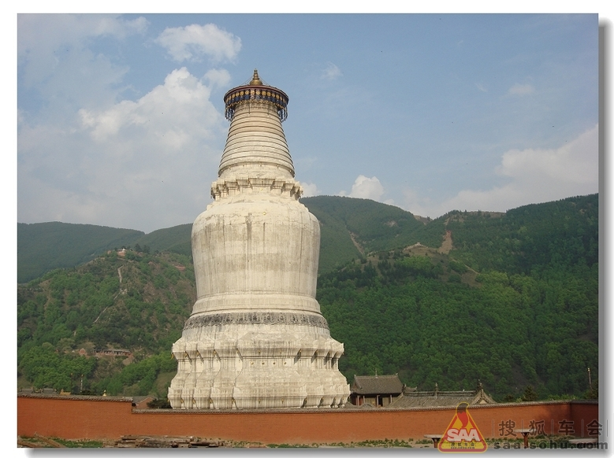
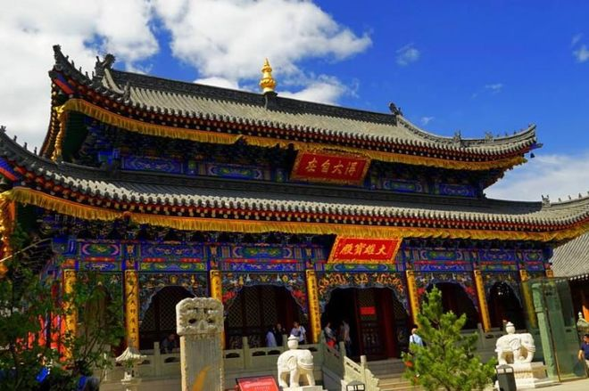
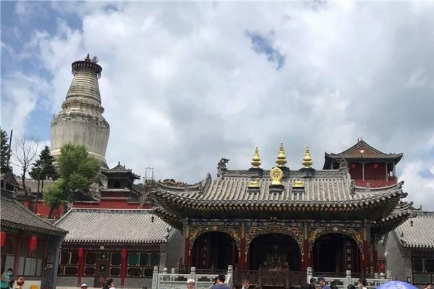
9/12 周六五台山朝圣太原 → 五台山 · 约 250km / 2.5h
07:30出发酒店早餐后出发，全程高速赴五台山
10:30朝拜殊像寺（文殊祖庭）→ 塔院寺（大白塔）→ 菩萨顶 → 显通寺（五台山历史最久寺院）
12:00午餐一盏明灯 · 全素斋（五台山特色素斋）（暂定 · 以当日实际为准）
14:00黛螺顶登 1080 级台阶朝五方文殊 体力不支可山脚休息，量力而行
18:00晚餐清凉一品香（荤素搭配）（暂定 · 以当日实际为准）
住宿：五台山 · 全季酒店（含双早）｜注意：今日海拔较高，全天备一件厚外套
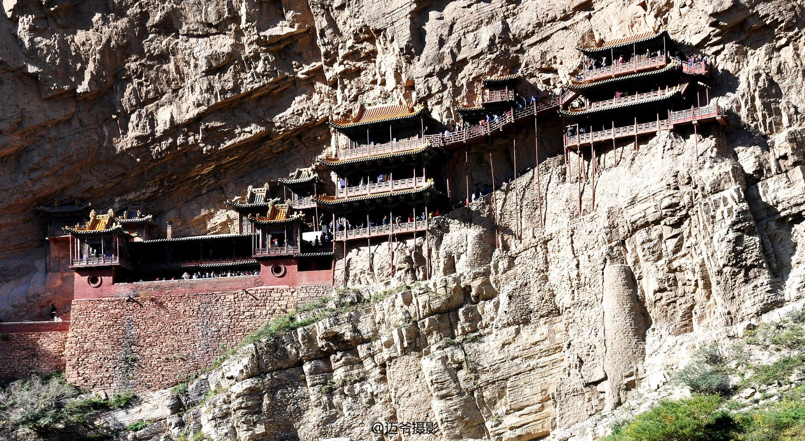
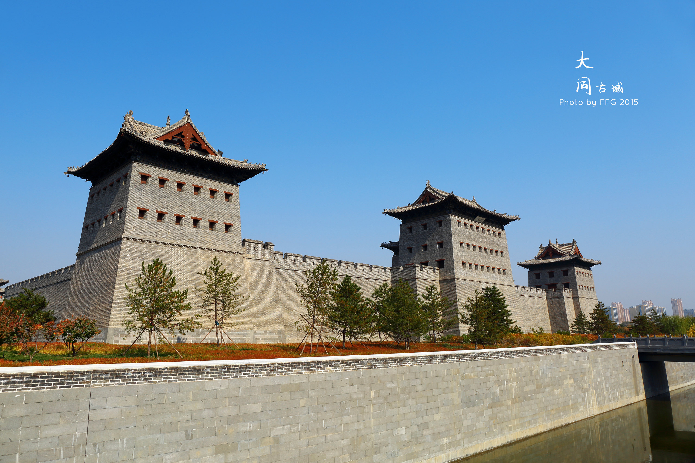
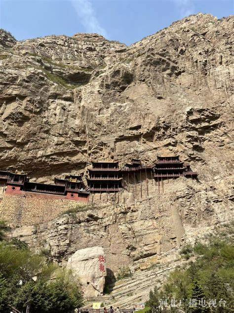
9/13 周日悬空寺 → 大同古城五台山 → 悬空寺（约4h，道路施工绕行）→ 大同 80km
08:00出发早餐后出发赴浑源（当日车程较长，可备颈枕；受五台山北线道路施工影响约 4h 车程）
约12:00午餐浑源 · 蔡家酒楼（浑源凉粉等地方风味）（暂定 · 以当日实际为准）
13:30悬空寺游览世界文化遗产悬空寺（首道票+景交已含）登临票 135 元 · 需自行抢票（见注意事项 ①）
16:30大同赴大同古城入住，晚间古城墙夜景自由活动
18:30晚餐古城内 · 凤临阁（大同名店）（暂定 · 以当日实际为准）
住宿：大同 · 代王府漫心酒店（古城内，含双早）
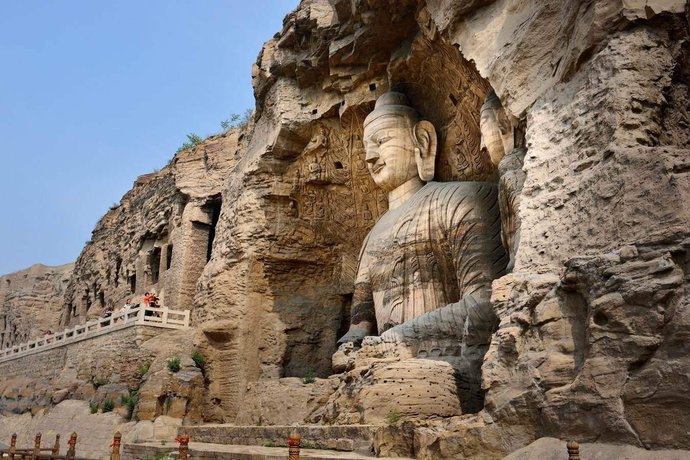

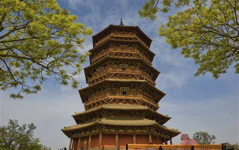
9/14 周一云冈石窟 · 应县木塔大同 → 云冈 → 应县 80km → 太原 250km
09:00云冈出发赴云冈（约30min车程），游览世界文化遗产 云冈石窟（门票+电瓶车已含），北魏皇家石窟群
12:00午餐大同 · 紫泥 369（西环店）（暂定 · 以当日实际为准）
14:00木塔应县木塔——世界现存最古老纯木结构楼阁式塔（门票已含）
15:30太原约 3h 车程返太原（受高速施工影响可能略有绕行，以实际为准）
19:30晚餐太原 · 山西饭店（山西饭店旧址，晋菜风味）（暂定 · 以当日实际为准）
住宿：太原 · 柳巷五洲假日酒店（5钻，钟楼街商圈，含双早）｜晚间可步行逛钟楼街夜市
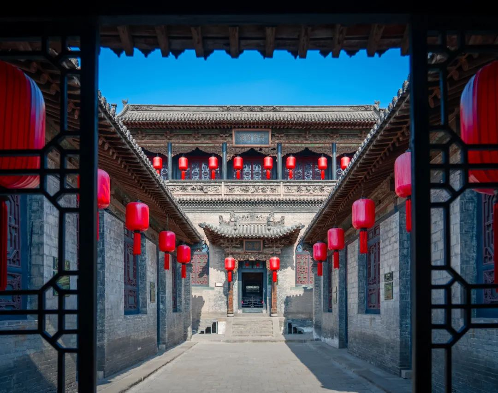
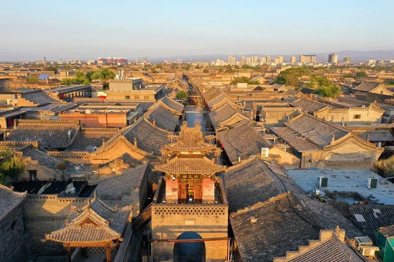
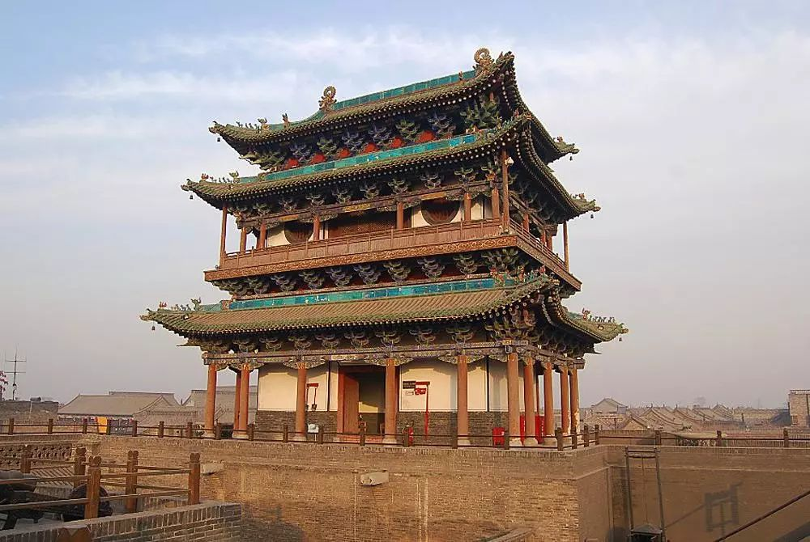
9/15 周二乔家大院 · 镇国寺 · 平遥古城太原 → 乔家 50km → 镇国寺 40km → 平遥 15km
10:00乔家出发赴祁县，游览乔家大院（门票已含）——晋商民居典范，《大红灯笼高高挂》取景地
12:30午餐乔家老号 · 八碗八碟（特色晋菜）（暂定 · 以当日实际为准）
约14:30镇国寺镇国寺（世界文化遗产 · 现存最早五代木构 · 万佛殿，门票已含）
16:00平遥世界文化遗产 平遥古城（通票已含）：古城墙 → 古县衙 → 明清一条街 → 日升昌票号 → 协同庆
18:30晚餐天元奎（明清街人气餐馆，平遥牛肉）（暂定 · 以当日实际为准）
住宿：平遥 · 亚朵酒店（含双早）｜晚间可逛明清街夜景

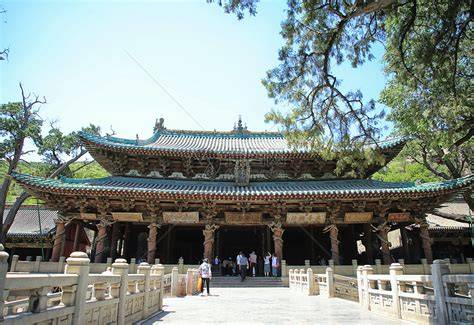
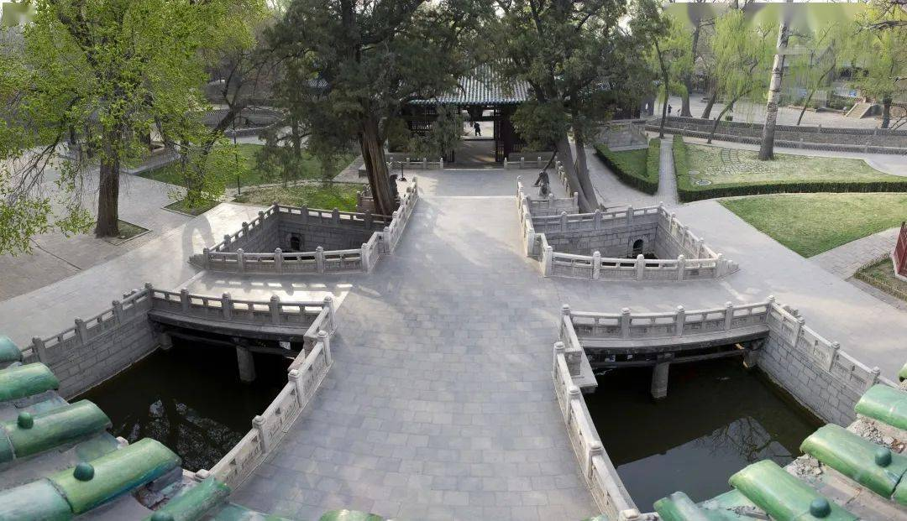
9/16 周三晋祠 → 返沪东航 MU2410 · 武宿T2 19:00 → 虹桥T2 21:15
10:00出发酒店退房出发，赴太原晋祠方向（约 100km / 1.5h，可车上补眠）
约11:40晋祠游览晋祠（门票+电瓶车已含）——现存最早皇家祭祀园林：圣母殿、难老泉、鱼沼飞梁
13:30午餐晋祠周边晋菜餐厅（随团安排）（暂定 · 以当日实际为准）
14:40机场送太原武宿机场（约 40min），办理值机托运；候机时间可逛机场商店
19:00返程太原 → 上海，约 21:15 抵虹桥，行程结束
早餐已含 · 午餐已含（晋祠周边）｜晚餐自理（机上 / 到家用）
02
天气与穿衣
历年 9 月参考值 · 出行前 1-2 天看实时预报山西 9 月的脾气：早晚像初冬、中午像夏天，昼夜温差普遍 10℃ 以上，午后偶有阵雨，紫外线强且空气干燥——带对衣服是这趟旅行舒服的关键。
五台山 · 9/12
3 ~ 18℃台怀镇
全程最冷一天
白天外套 · 早晚需厚外套/轻薄羽绒
白天外套 · 早晚需厚外套/轻薄羽绒
大同 · 9/13-14
8 ~ 23℃悬空寺/云冈
山风较大
防风外套必备
防风外套必备
太原 · 9/14/11
12 ~ 25℃市区
相对舒适
早晚一件薄外套
早晚一件薄外套
平遥 · 9/15-16
13 ~ 26℃古城
中午偏热
古城石板路步行多
古城石板路步行多
推荐「洋葱式」三层叠穿（可随时穿脱）
- 内层：速干/透气长袖 T 恤（别穿纯棉贴身，出汗后山风一吹容易感冒）；
- 中层：抓绒衣或薄卫衣，早晚保暖、中午可脱；备一件可压缩薄羽绒最稳妥（五台山这天用得上）；
- 外层：防风夹克 / 薄冲锋衣，挡风也防阵雨。
- 鞋：防滑舒适的运动鞋/徒步鞋（黛螺顶 1080 台阶 + 古城石板路全靠它），请勿穿高跟鞋、皮鞋。
03
携带物品清单
「必带」请出门前再核对一遍证件与票务
- 身份证原件：登机 + 全部景点实名，全程唯一硬证件
- 登临票预约：确认「恒山景区」公众号已注册实名（想登临的同事）
- 手机保持电量，旅行群置顶
衣物（叠穿为主）
- 长袖 + 薄外套若干套，方便分层穿脱
- 一件厚外套/轻薄羽绒：五台山早晚用
- 舒适防滑运动鞋（必带）、袜子多备几双
- 雨具：轻便雨衣或折叠伞（阵雨说来就来）
日用防护
- 防晒霜（紫外线强）、太阳镜、遮阳帽
- 保温杯（多喝水，气候干燥）
- 充电宝、常用洗漱用品、纸巾湿巾
药品与随身
- 晕车药：多日车程 2.5-4h，容易晕车的同事备好
- 个人常备药（肠胃药、感冒药、创可贴等）
- 颈枕、少量零食（长途车解闷）
- 少量现金（零钱，景区小摊/功德箱用）
行李提示：全程每天换一家酒店，建议 1 个登机箱 + 1 个随身包，贵重物品随身带；出发前 10 分钟自查房内有无遗漏。
04
注意事项
悬空寺登临票 · 135 元/人（先垫付 · 回程报销）
- 悬空寺门票分两层：景区首道票（含景交）已由公司统一含在团费中；如需「登临」悬空寺栈道，需另购登临票 135 元/人：个人先垫付购票，回程凭购票凭证统一报销（详见 05 费用说明）。
- 登临票分两波放票：9/6（周六）晚 20:00 与 9/7（周日）早 07:20，在微信「恒山景区」公众号抢票，需身份证实名 + 人脸识别；票量极少、先到先得，通常放票即秒空。
- 想登临的同事请按两波放票时间尝试；未抢到不影响行程，团队将改游大同华严寺（门票公司统一安排）。抢到登临票的同事请保留购票订单截图/凭证，回程统一报销；登临平台较窄、需排队分批登临（旺季约 1-2 小时），请听从领队安排。
集合与守时
- 每天出发时间以群内通知为准，提前 10 分钟到车上；大巴准点发车，迟到不等。
- 全程同一辆车、固定座位，下车记车牌号；手机保持畅通，跟紧领队不落单。
寺院礼仪（五台山）
- 着装得体：不穿短裤、短裙、吊带进入寺院；
- 进殿脱帽、不踩门槛、殿内不拍照、不喧哗；绕塔/绕殿顺时针行走；
- 尊重信仰，上香随缘，勿轻信路边"僧人"搭讪推销。
古建防火 · 全团红线
- 悬空寺、应县木塔、云冈、乔家大院、晋祠均为木质古建，全程严禁吸烟、严禁明火；
- 室内文物请勿使用闪光灯拍照；烟民请到景区指定区域。
体力与健康
- 黛螺顶 1080 级台阶约需 30-40 分钟，量力而行，体力不支可在台怀镇休息，与领队报备即可，不强求登顶；
- 高原+干燥：多喝水、注意防晒；温差大谨防感冒，身体不适第一时间告诉领队。
安全与其他
- 车程长请系好安全带；古城/景区人多，看管好随身物品；
- 自由活动时间请按时归队；个人消费自行负责，如需帮助随时找领队或执行组。
05
费用说明
公司统一承担 · 另有 1000 元/人山西旅行经费可报销公司已统一安排（无需个人付费）
- 上海 ⇌ 太原往返机票
- 5 晚 4-5 钻酒店（均含早餐）
- 行程内正餐（9/12-9/16 团餐）
- 景点首道门票 + 景交/电瓶车（团队价统一含：五台山、悬空寺首道、云冈石窟、应县木塔、乔家大院、平遥古城、晋祠等全程景点）
- 37 座航空座椅大巴（全程专车）+ 全程优秀导游
- 旅游意外险（公司统一投保）
山西旅行经费 · 1000 元/人（公司报销）
- 山西当地消费均可：购买伴手礼 / 特色物品、SPA 按摩、娱乐体验、美食小吃等
- 保留当地消费发票 / 消费凭证 / 支付截图，作为报销依据
- 回程后统一提交报销：1000 元/人额度内实报实销，提交方式与截止时间见群内通知
个人自理 / 垫付
- 悬空寺登临票 135 元/人：自愿参与；先垫付购票，回程凭购票凭证报销（9/6 20:00 / 9/7 07:20 两波抢票；未抢到不影响行程、改游华严寺；不占用旅行经费额度）
- 超出 1000 元旅行经费额度的当地个人消费（伴手礼、酒水、自费项目等）
- 注：行程外增减项目及不可抗力产生的额外费用另计